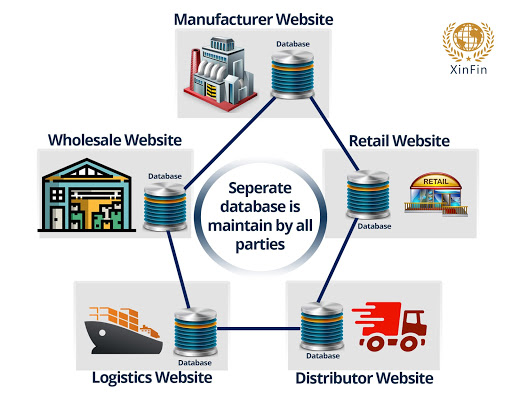

In 1991, Dr W. Scott Stornetta and his co-author Dr Stuart Haber published a whitepaper introducing ‘blockchain’, a decentralised, cryptic database where digital transactions are Secured.
The journey of Blockchain started in 1991 A structure which was similar to that of Blockchain was mentioned in a research paper titled “How to Time-Stamp a Digital Document” in 1991 by Haber and Stornetta.
.jpg)

According to that paper, a client sends a document to timestamp to a timestamping server and the server would sign the document with the current timestamp. Also, the server would link the document to the previous document. The pointers pointed to specific data and not the location of the document. So if the data changed, the pointer would become invalid. It ensured no one could tamper the data that had once passed through the server.
According to this paper what was needed was a method of time-stamping digital documents with the following two properties
1.Finding a way for automated time-stamping, without any reliance on the characteristics of the medium on which the data appears, so that it is impossible to change even one bit of the document without the change being apparent.
2. It should be impossible to stamp a document with a time and date different from the actual one.
Next and definitely the most important innovation leading to Blockchain was the Bitcoin. In 2008, Satoshi Nakamoto published a white-paper titled “Bitcoin: A Peer to Peer Electronic Cash System”. The paper claimed that it had a solution to the double spending problem in digital currency using a peer-to-peer network. The main aim of the paper was to build a peer-to-peer version of digital currency that would enable people to spend it directly without it going in a financial institution. It was a huge innovation that enabled the user to transact directly without relying on a third party
These functions represent the core of why bitcoin was created. Another core aspect to Bitcoin is the fact that it was created to be open source. By making the code behind Bitcoin open source, Satoshi Nakamoto gave anyone the opportunity to learn from, build on and expand beyond it.
To understand the 1st Generation blockchain technology, we need to take a look at Bitcoin’s Blockchain. Using blockchain technology, Bitcoin was able to become the first successful digital currency in the world.
How this was achieved was through the 1st Generation blockchain technology. Let’s have an example a Bank:
Ram works as a driver. At the end of the day, he received 200 USD in tips. He takes the money to Axis Bank and deposits the money. Axis Bank updates its ledger, and ram bank account with them now shows that he has 200 USD. While on the way home, he realizes that he needs some cash on hand to buy dinner. However, the only cash withdrawal machine on his way home belongs to icici bank. icici bank ledger does not show that ram has 200 USD, and he has no choice but to walk back to axis Bank to withdraw his money. More than just the inconvenience of having to walk to the right cash withdrawal machine, a centralized ledger requires a degree of trust: ram has to trust that the bank has his money, and that will return the money to him on request. If the bank’s records are erased, ram has essentially lost all his money.
How the Blockchain is different
In the blockchain, the ledger is shared with all participants, making it a decentralized, distributed ledger. Rather than having one central bank recording the transactions, everyone has a copy of the same ledger, and everyone’s ledger is updated regularly. Tampering with a single ledger would not work; if the other ledgers do not record it, it is not validated.
Ankit and 5 other friends have a meet-up session every day. During each session, they tell each other how much each of them has spent, and what they have spent on, over the past day. Each of them has a notebook in which they record down these payments. After they have recorded down all these transactions, they all compare notes to ensure that the results are the same. After ensuring that the results are the same, all 5 of them sign on all 5 notebooks, and they take the notebooks home until their next session. There are several benefits to this method.
1. The loss of a notebook would have no impact: the records are still stored with everyone else.
2. If any one of them decide to tamper their records, it will immediately become obvious during their next sharing session. A cheater would have to break into 4 other homes, steal their notebooks, replace it with a notebook that looks exactly the same, refill in all the pages that were written on, and forge the signatures for each page before the next session. Now imagine instead of 5 friends, it’s a few thousand friends who hold this session. And instead of a session once a day, it’s once every 10 minutes.
3. There is no need to ‘trust’ one another: transactions are verified, and signed, by all members at the end of each session
Now, why Bitcoin was created?
Bitcoin Creator, the mysterious Satoshi Nakamoto wanted to remove Third-Party Verification and intended to create a trustless payment mechanism with irreversible transactions. Now, such a system is helpful in remittance, private transactions, providing financial aid to people stuck in unstable countries with collapsing economies. Bitcoin is a currency without borders.
Now supposes, you did a work-from-home internship for a startup in the USA. They paid you through Paypal. Now Paypal will charge you between 2.5 to 5% of transaction fees. Right now, you have USD in you Paypal account, so you have to convert it. The conversion rate of Paypal or other converters is generally 2 to 3 Rs/USD less than the actual rate. And now when you finally have the INR currency in your bank account, if your balance is less than the “Minimum Balance Criterion”, you’ll be charged by your bank.This entire process would take a minimum of 3-5 business days.
Here, Ankit is sending $100 to Rishikesh however it ought to ignore via a trusted third celebration like a Bank or Financial service employer earlier than Hrishikesh can receive it. A transaction charges of 2% is deducted from this quantity and Hrishikesh only receives $98 at the give up of the transaction. Now this can also no longer appear a huge amount however imagine if you have been sending $100,000 rather of $100, then the transaction prices also increases to $2,000 which is a huge amount. As per a record from SNL Financial and CNNMoney, JPMorgan Chase, Bank of America and Wells Fargo earned extra than $6 billion from ATM and overdraft fees in 2015

Most of these expenses come under Third-Party/Broker Fees, which you pay to a trusted third party (Paypal and Your Bank) for carrying out your transactions.
If the startup had paid you in bitcoins, there would have been a minimal (less than the above scenario) fee and the transaction would’ve been completed in an hour. You could have used the received bitcoins from your wallet directly.
This method of remittance is way more cheaper and faster.These are considered the second generation because they’ve taken this idea of recording transactions on a blockchain and expanded it to incorporate programming languages. These second-generation blockchains have unleashed smart contracts. These allow for customizable transactions. You can custom create transactions to execute however best fits the needs of the parties involved.
Second generation blockchains bought the use cases of assets in general to be maintained by a blockchain. In this generation anyone can issue shares on the blockchain. Ethereum is an example of a second generation blockchain. Ethereum has at its core a way to apply arbitrary rules for ownership, transaction formats and state transition functions, taking both the state of a blockchain and a transaction for that chain, and then outputting a new state as its result.
To understand this, we now take a closer look at Ethereum. Often paired together with Bitcoin as a cryptocurrency, it is actually a platform that uses the currency Ether. The purpose of the platform is to draw up ‘smart contracts’ and conduct transactions, and these processes are fueled by ETH.
A smart contract is a contract that is coded, and subsequently uploaded to the blockchain. Whenever a contract is executed, every node in the network runs it, then uploads it to the blockchain.
The smart contract is, in essence, a coded ‘If-Then’ statement. If certain requirements are met, the terms of the contract are executed. This process is trustless; it cannot be tampered with by any party, nor can any party cheat and renege on its end of the deal. The introduction of the smart contract to the blockchain technology has many practical functions, as highlighted by the simple example of online shopping.
Ankit wishes to purchase a new phone from Vendor A. He is required to make payment upfront, and the product will be shipped to him within 3 working days after the vendor has received payment.
Issue 1: Ankit cannot find any reviews of Vendor A online. He is hesitant to pay upfront
Issue 2: Vendor A has to receive payment upfront, or else Ankit might not pay after receiving the product.
Issue 3: The shipping company might lose the product, Ankit does not get his item, and Vendor A gets a poor reputation.
1. Ankit only pays for the product upon delivery to him
2. Vendor A is guaranteed payment upon Ankit receiving the product
3. The shipping company will compensate Vendor A if the product is lost/damaged, and Ankit will be made aware that it was not the fault of the vendor.
This entire process requires no middleman to ensure that the deal is upheld, nor is there a need for paperwork filing and administration fees: the entire contract is executed and entered into the blockchain without interference, making it binding and immutable.
2nd Generation Blockchain Technology takes it a step up, and is more than a simple digital currency. It has evolved into a platform for the creation of decentralised applications, which can be integrated into many aspects of daily life to reduce cost and improve efficiency.
Third generation blockchains are useful for when it comes to contract/agreements and the flow of information. What third generation blockchains will be able to do is let different blockchains ‘talk’ to each other like a computer network essentially.
In addition to money and assets, agreements can also be registered on the blockchain. Such a digital contract enforces the participants to keep their promise. As an example, think of an insurance contract that requires regular payments. The contract can end the agreement unilaterally when the participant misses payments.
Third generation blockchains can also work in layers. So you could have one layer handling contracts, one layer handling transactions and another layer for passing secure data between blockchains. The idea is that the blockchain remains secure and is never slowed down or compromised in terms of performance. This is where blockchains such as Ethereum are compromised. Every time a new user or token is launched on the Ethereum blockchain, the blockchain speed is compromised and slowed down to manage the ever growing requests and actions the blockchain needs to process/validate.
Blockchain is a decentralized distributed database of immutable records, where transactions are protected by strong cryptographic algorithms and the network status is maintained by the Consensus algorithm.
In simple words, Blockchain is a chain of blocks that contain information.
Blockchain is the algorithm for Distributed Ledger Technology (DLT ). DLT and Blockchain as a concept that can be used in various applications beyond cryptocurrency network like, Real estate, logistics, Banking and Financial Sector, Fintech and elections and surveys. And the list is endless and expanding daily.
Many Governments and leading Banks have decided to bring many of their conventional transactions on to the Blockchain technology. The applications and potential of this framework is huge and is considered to be changing the way transactions are made in various domains.
However great the technology was, its’ true potential was not realized until Satoshi Nakamoto used it to create a digital cryptocurrency “bitcoin”.
The blockchain technology dates back to early 2008 when the world was going through a miserable financial crisis. At this time, a person or group of people(no one really knows!) under the pseudonym of “Satoshi Nakamoto” realized the terror of the centralized nature of our current financial system. Whenever you need to transfer money or even commit a simple transaction you need the help of a third party like a bank or Paypal.
They have all your information
They have the power to freeze your accounts
You have to trust the system
In lieu of this centralized system, Satoshi Nakamoto proposed a decentralized peer-to-peer financial system involving a cryptocurrency called Bitcoin. The underlying technology of Bitcoin is called Blockchain.
While traders are shooting for speedy gains and million dollar moonshots, many can overlook the underlying technology behind cryptocurrency. Blockchain is the technology behind Bitcoin and altcoins that makes the storing of value possible. Blockchain stores data in a distributed ledger that potentially billions of people can access and update securely.Blockchain technology will soon reach into areas beyond the digital currency movement and begin to affect everything from real estate to entertainment as startups increasingly integrate blockchain into their business models. Even the democratic process and the
way countries are governed will be impacted by the coming wave of blockchain disruption. Voter fraud and election hacking is a concern that has been widely discussed in the past few years. Blockchain advocates assert that a public ledger voting system could provide an unhackable system for governments while also counting the votes way faster
Let’s consider the supply chain use case where multiple parties like manufacturers, logistics, wholesalers, distributors, and retailers are involved. The movement of a product through the supply chain is tracked individually by the respective parties.
Each party will have their own database and an application for capturing transactions and the movement of the product through the chain. The problems with this approach are:
Different sources of truth: At any point of time, all the databases may not have the same data, as it depends on the organizational process involved in updating the database or the delay in propagating the data across all the parties.
Exposure: Due to the involvement of intermediaries and multiple copies of data, the manufacturer is unable to control fake products being introduced into the chain or genuine products distributed into the black market.
Human error:The data in one or more of the databases may not sync up due to human error or application issues. This would lead to a dispute between parties, resulting in increased cycle time for resolving the conflict.
Lack of customer focus: The customer finds it extremely difficult to identify whether the product is genuine.
 (1).jpg)
A single shared data store, which is tamper-evident as it is protected using cryptographic techniques.
All parties will have the same copy of this ledger.
All parties must give consensus before a new transaction is added to the shared ledger.
Transactions recorded on the ledger can never be altered.
Single source of truth: At any point in time, all the parties will refer to the same data due to a single shared ledger.
Early detection of human error: Since all parties need to give consensus, any human or application errors will be caught early in the chain.
Safety: The manufacturer can ensure that the quality of their products is not comprised.
Customer centric supply chain: Since blockchain provides the opportunity to connect the manufacturer directly with the customer; the manufacturer is able to provide a better customer experience.
Regulatory compliance: Blockchain improves regulatory compliance through transparent audits.

Decentralized technology gives you the power to store your assets in a network which can be further access by the means of the internet. An asset can be anything like a contract or a document etc. Through this tokenized asset, the owner has a direct control over his account by the means of a key that is linked to his account which gives the owner a power to transfer his assets to anyone he wants securely. The Blockchain technology proves to be a really effective tool for decentralizing the web. It does possess the power to bring massive changes in the industries.
“Mining” involves a “miner” that solves a complex mathematical computation. It i the the process in which new blocks are created and pushed up to the blockchain. Miners compete with each other because of the reward they can get after deciphering the puzzle. The miner who solves the puzzle first will get the prize. This process of solving the model is known as Proof of Work. This set of procedures or rules that the network has to follow in order to create the next block, is known as the consensus model. In Proof of Work, a miner has to engage a significant amount of computational resources to create the next block. So, this was all about Blockchain Features. Hope you like our explanation of Why Blockchain is popular.
Blockchain has the ability to analyze and revise itself from time to time which stimulates its self- reviewing process. All the nodes together create a very powerful network. Every node is an “administrator” of the blockchain, and joins the network. Every node in the network has an incentive for participating in the network. The nodes compete in order to have the chance of winning the digital currencies by solving computational puzzles. This way, these specific nodes are said to be mining for the recent blocks which contain all the details of recent transaction
This is the first and an important feature of Blockchain. The most remarkable thing about this Blockchain technology is that it increases the capacity of the whole network. Because of the reason that there are a lot of computers working together which in total offers more power then few of the devices where the things are centralized. A perfect example of this increased capacity is a project started by Stanford University which created a supercomputer that simulates protein folding for medical research.

Permissionless Blockchains enable anybody to take an interest. The exchanges are approved and handled by votes/agreement. A vote does not rely upon having an earlier character of any sort inside the record and no previous trust is expected between taking an interest hubs.
Permissionless blockchains allow anybody to create an address and begin interacting with the blockchain network. The internet is a good example of a permissionless system; where anyone can create a website of their choice. In a similar way, with a permissionless blockchain, any person, thing, or entity can interact with other members or parties by creating an address on the network. Each party can choose to run a node for the blockchain and participate in transaction verifications (via the mining mechanism), as well as create smart contracts on the network. This is the ethos of bitcoin and ethereum blockchain networks. These networks employ a crypto-economic model (driven by proof-of-work consensus mechanisms) that incentivizes people to run network nodes. All network participants are duly rewarded for their contributions through tokens.
Permissionless blockchains are gaining traction as a foundation for business-to-consumer (B2C) and consumer-to-consumer (C2C) use cases. Many startup companies are building solutions on top of Bitcoin and Ethereum networks. Most of these solutions use a token (cryptocurrency) system to simplify the exchange of value among participants based on an internal incentive structure.
Permissioned blockchains limit access regarding who can perform different activities on the Blockchain. The exchanges are approved and handled by the individuals who are as of now perceived by the record and some level of prior trust is accepted and demonstrated
A permissioned blockchain is a closed ecosystem in which each participant is well defined. This type of blockchain is built to allow an organization or a consortium of organizations to efficiently exchange information and record transactions. While permissionless blockchains gained rapid popularity in the business world, enterprises are now discovering the many advantages of using blockchains to augment business systems as well, especially to instill trust, transparency, and efficiency into B2B exchanges. The Hyperledger Foundation is the driving open source initiative for these B2B blockchains.
A permissioned blockchain is run by the members of a consortium. Stakeholders “opt-in” to form a blockchain network. Only pre-approved entities can run the nodes that validate transaction blocks and execute smart contracts on the blockchain. Permissioned blockchains make it easy to share trusted information in a secure context, and with the confidentiality that businesses need to operate effectively.


1.) In a traditional DB, a single authorised server or a group of authorised servers (sharding in MongoDB) store the data. The users of this data have to assume that this organisation running the server will not tamper the data and the security of the server will not be compromised.
In a Blockchain technology, all the data is publically stored on a peer to peer network and is publicly verifiable.
This verifiability is incorporated through cryptography - encryption and hashing. As the data is publically stored, a blockchain is very tough to hack.
2.) In a traditional DB, there is no issue of privacy. All the user data (access tokens and login credentials) are stored privately on the server. To handle the issue of privacy, the blockchain nodes are generally anonymous. The user identity is aliased through a public cryptographic key. To check if the node has authorised any transaction/block, you have to verify the digital signature using the node’s public key.
3.) In a traditional DB, there is no need to verify data or a consensus mechanism. In a blockchain, a proof of work or proof of stake consensus mechanisms is used so that eventually a single state of the blockchain is maintained over the peer to peer network.
4.) In a traditional DB, there is no need to verify data or a consensus mechanism. In a blockchain, a proof of work or proof of stake consensus mechanisms is used so that eventually a single state of the blockchain is maintained over the peer to peer network.
Nearly everyone has heard of Blockchain and that it is cool.But not everybody understands how it works.
So this will guide you how blockchain technology works.
A Blockchain is a diary that is almost impossible to forget.
Let's imagine that 10 people in one room decided to make a separate currency. They have to follow the flow of funds, and one person – let's call him Ram – decided to keep a list of all actions in a diary: One man – let’s call him sam – decided to steal money. To hide this, he changed the entries in the diary:

Ram noticed that someone had interfered with his diary. He decided to stop this from happening.He found a program called a Hash function that turns text into a set of numbers and letters as in the table below.

A hash is a string of numbers and letters, produced by hash functions. A hash function is a mathematical function that takes a variable number of characters and converts it into a string with a fixed number of characters. Even a small change in a string creates a completely new hash.
Sam decided to change entries again. At night, he got to the diary, changed the record and generated a new hash.
Ram noticed that somebody had sifted through the diary again. He decided to complicate the record of each transaction. After each record, he inserted a hash generated from the record+ last hash. So each entry depends on the previous.
If Sam tries to change the record, he will have to change the hash in all previous entries. But Jack really wanted more money, and he spent the whole night counting all the hashes.
But Ram did not want to give up. He decided to add a number after each record. This number is called “Nonce”. Nonce should be chosen so that the generated hash ends in two zeros.
Now, to forget records, Sam would have to spend hours and hours choosing Nonce for each line.
More importantly, not only people, but computers can’t figure out the Nonce quickly

Later, Ram realized that there were too many records and that he couldn’t keep the diary like this forever. So when he wrote 5,000 transactions, he converted them to a one page spreadsheet. Mary checked that all transactions were right.
Ram spread his spreadsheet diary over 5,000 computers, which were all over the world. These computers are called nodes. Every time a transaction occurs it has to be approved by the nodes, each of whom checks its validity. Once every node has checked a transaction there is a sort of electronic vote, as some nodes may think the transaction is valid and others think it is a fraud.
The nodes referred to above are computers. Each node has a copy of the digital ledger or Blockchain. Each node checks the validity of each transaction. If a majority of nodes say that a transaction is valid then it is written into a block.Now, if Sam change one entry, all the other computers will have the original hash. They would not allow the change to occur.
This one spreadsheet is called a block .The whole family of blocks is the Blockchain. Every node has a copy of the Blockchain. Once a block reaches a certain number of approved transactions then a new block is formed.
The Blockchain updates itself every ten minutes. It does so automatically. No master or central computer instructs the computers to do this.
As soon as the spreadsheet or ledger or registry is updated, it can no longer be changed. Thus, it’s impossible to forge it. You can only add new entries to it. The registry is updated on all computers on the network at the same time.
1. A Blockchain is a type of diary or spreadsheet containing information about transactions.
2.Each transaction generates a hash.
3.A hash is a string of numbers and letters.
4.Transactions are entered in the order in which they occurred. Order is very important.
5.The hash depends not only on the transaction but the previous transaction's hash.
6.Even a small change in a transaction creates a completely new hash.
7.The nodes check to make sure a transaction has not been changed by inspecting the hash.
8.If a transaction is approved by a majority of the nodes then it is written into a block.
9.Each block refers to the previous block and together make the Blockchain.
10.A Blockchain is effective as it is spread over many computers, each of which have a copy of the blockchain.
11.These computers are called nodes
12.The Blockchain updates itself every 10 minutes.
Bob gathered the 10 people together. He needed to explain the new coin to them.
Jack had confessed his sins to the group and deeply apologized. To prove his sincerity he gave Ann and Mary their coins back.
With all that sorted, Bob explained why this could never happen again. He decided to implement something called a digital signature to confirm every transaction. But first, he gave everyone a wallet.
A wallet is a string of numbers and letters,such as
18c177926650e5550973303c300e136f22673b74. This is an address that will appear in various blocks within the Blockchain as transactions take place. No visible records of who did what transaction with who, only the number of a wallet. The address of each particular wallet is also a public key.
To carry out a transaction you need two things: a wallet, which is basically an address, and a private key. The private key is a string of random numbers, but unlike the address the private key must be kept secret.
When someone decides to send coins to anyone else they must sign the message containing the transaction with their private key. The system of two keys is at the heart of encryption and cryptography, and its use long predates the existence of Blockchain. It was first proposed in the 1970s.
Once the message is sent it is broadcast to the Blockchain network. The network of nodes then works on the message to make sure that the transaction it contains is valid. If it confirms the validity, the transaction is placed in a block and after that no information about it can be changed.

A cryptographic key is a string of numbers and letters. Cryptographic keys are made by key generators or keygens. These keygens use very advanced mathematics involving prime numbers to create keys.
The Blockchain consists of individual behaviour specifications, a large set of rules that are programmed into it. Those specifications are called protocols. The implementation of specific protocols essentially made Blockchain what it is — a distributed, peer-to-peer and secured information database.
The Blockchain protocols ensure that the network runs the way it was intended to by its creators, even though it’s completely autonomous and isn’t controlled by anyone. Here are some examples of protocols implemented in Blockchain:
· Input information for every hash number has to include the previous block’s hash number.
· The reward for successfully mining a block decreases by half after every 210,000 blocks are sealed-off.
· In order to keep the amount of time needed to mine one block at approximately 10 minutes, mining difficulty is recalculated every 2,016 blocks.
The placing of a transaction in a block is called a successful conclusion to a proof of work challenge, and is carried out by special nodes called miners.
Proof of Work is a system that requires some work from the service requester, usually meaning processing time by a computer. Producing a proof of work is a random process with low probability, so normally a lot of trial and error is required for a valid proof of work to be generated. When it comes to Bitcoins, hash is what serves as a proof of work.
Miners on a Blockchain are nodes that produce blocks by solving proof of work problems. If a miner produces a block that is approved by an electronic consensus of nodes then the miner is rewarded with coins. As of October 2017, Bitcoin miners get 12.5 Bitcoins per block.
The reward is not the the only incentive for miners to keep running their hardware. They also get the transaction fees that Bitcoin users pay. Currently, as there is a huge amount of transactions happening within the Bitcoin network, the transaction fees have skyrocketed. Even though the fees are voluntary on the part of the sender, miners will always prioritize transfers with higher transaction fees. So, unless you are willing to pay a rather high fee, your transaction might take a very long time to be processed.
1. If you possess digital money then you need a digital wallet.
2. A wallet is an address on the Blockchain.
3. A wallet is a public key.
4. Someone wanting to conduct a transaction must send a message with the transaction signed with their private key.
5. Before a transaction is approved it is checked by every node who vote on it in a special electronic way that is different to the elections that most countries have.
6. A transaction is placed in a block by miners who are special nodes.
7. The computers in the network holding the Blockchain are called nodes.
8. Miners place transactions in blocks in response to proof of work challenges.
9. After miners successfully 'seal off' a block of transaction, they receive a reward, which currently stands at 12.5 BTC, and they also get to keep a transaction fees Bitcoin holders pay.
10. Interaction is carried out on a Blockchain using rules built into the program of the Blockchain called protocols.
11. Cryptography is essential on Blockchains to thwart thieves who would like to hack into the Blockchain.
12. Cryptographic keys are made by key generators or keygens.
13. Keygens use very advanced mathematics involving prime numbers to create keys.
14. A block contains a timestamp, a reference to the previous block, the transactions and the computational problem that had to be solved before the block went on the Blockchain.
15. The distributed network of nodes that need to reach consensus makes fraud almost impossible within the Blockchain.
We are living during a truly revolutionary time of decentralization, cryptocurrencies, and tokenized economies. However, none of this would be possible if it weren’t for the advent of the Blockchain.
So there is some example solved by blockchain technology.

At the moment, sending money to another either domestically or internationally requires the use of a third party, be it your local bank or PayPal account. What’s so bad about that? Well, these intermediaries usually charge hefty fees, and transactions can take an excessive amount of time. Additionally, we must trust these third parties in how they handle our personal data. It’s also worth noting that not all individuals even have access to banking services.
One of the benefits of Blockchain technology is that these databases work seamlessly with cryptocurrencies, which are, simply put, digital cash secured by cryptography. Blockchain technology allows for individuals to send cryptocurrencies between one another as a transfer of value. This is done without needing to rely on third parties.

Have you ever been to a store and been suspicious about whether or not an item of your choice was actually authentic? Could an expensive bottle of wine actually be a knockoff? This happens often in today’s society. Thankfully, Blockchain technology can help us trace the history of any good or item back to its source in such a way that tampering with it unnoticeably would be impossible.
With the help of Blockchain technology, one could easily find out where a product was made, by whom, and if the quality and condition of said product or item is of an acceptable quality.

Voting always seems to raise suspicions, especially during heated presidential elections. This was certainly the case with Hillary Clinton vs Donald Trump in 2016, during which foreign intelligence agencies (for the most part, Russia) were blamed for influencing the United States’ presidential election.
If Blockchain technology were to be used for voting purposes, there would be no question as to the results’ authenticity and legitimacy, due to the fact that all entries in a decentralized ledger are immutable and irreversible.

Politics and transparency don’t always go hand in hand when it comes down to it. Government entities have budgets and responsibilities that they need to fulfill in view of their citizens. At the moment, it’s quite difficult to monitor everything that they do expense-wise and make sure that money is being spent ethically.
Basically, Blockchain technology use in terms of political operations would allow us to make sure that no transactions or odd deals were taking place “off the books.” The increased transparency provided by a decentralized ledger would also help increase overall integrity.

The theft and illegal sharing of intellectual property such as music, movies, texts, and works of art is quite a big problem today. There are tons of great artists and authors who end up having their content leaked all over the internet and lose out on rightfully earned revenues.
However, with certain Blockchain projects and creative individuals will soon have the opportunity to share their content online and be able to prove that they are indeed the creators of said content and hold all intellectual property rights regardless of where it ends up, and everyone else would be aware of this too.

Currently, the cloud storage market is dominated by organizations like Google Drive, Dropbox, and just a few others. These are of course notably trustworthy companies. However, do you really want a single entity being in possession of all of your files? No, that’s risky and totally centralized.
Thankfully, there are projects that utilize decentralization to improve cloud storage security and encrypt your personal files using cryptography. This means that you are in full control of your data and that you are the only one who can access it.

There are many issues with the purchase and sale of real estate, mostly related to fraud, transparency, and errors in public records.
Blockchain technology can help improve transaction speeds related to the acquisition and sale of real estate, as well as make record keeping more efficient and reliable by absolving the need to keep paper-based records that are at risk of being altered or lost.
Bitcoin and other cryptocurrencies have been an extremely hot topic lately, with both positive and negative speculations about its future. Despite the growing interest in cryptocurrency and its underlying blockchain technology.
So these are some examples of what is future of blockchain technology.
Widespread Distributed Data Models
Blockchain has highlighted a critical aspect of the way data is going to work in the coming decades, and that is a world where data will be ever increasingly distributed. Any solutions for next-generation data problems must come to grips with this fact, and plan for a day where critical data is distributed among many geographies and even across on-premise and cloud data centers.
Distributed ledger technology (DLT) is here to stay. Dubai has vowed to replace all government systems with DLT-based digital structures by 2020, which indicates that DLT will just grow over time. While the transition from a paper-based system to digital has been underway for a long time, DLT provides the underlying trust, immutability and transparency that such systems desperately need./p>
One of the areas of advancement in blockchain will be the standardization of interoperability among the different blockchains. While it is inevitable that there will be several blockchains with a specific business purpose, true benefits for the consumer or enterprise will be realized when they are able to "collaborate" in an open standard.
A Potential Ecosystem Of Specialized Chains
Defunct crypto currencies have created a significant amount of “public technical debt,” and their smart-contracts might still get triggered. As we calibrate and confirm industry-grade blockchain use cases -- healthcare information exchange and crypto claims settlement, for example -- we will likely end up with an ecosystem of specialized chains, operating security and utility chains in parallel.
I see more focus being placed on the powerful potential of blockchain for financial and non-financial applications. More investment is being put toward building out tools and platforms built on blockchain for identity verification, other security measures, contracts, payments and more.
Inflation and deflation of a bubble do not mean that an industry is not worthy. People get super excited only because they see huge potential in a product or service. In this inflation-deflation cycle, we shouldn't be surprised to see some dead potatoes. Crypto currency and blockchain have immense potential and we shall see it in coming years. It just takes time, as all the good things in life do
As the blockchain technology that supports not only crypto currency but many other business applications, matures, we are already seeing the real value emerge. The impact of distributed ledger technology may be greater than any of us realize -- it has the potential to change economics, business and society, and we’re just beginning to scratch the surface of what’s possible.